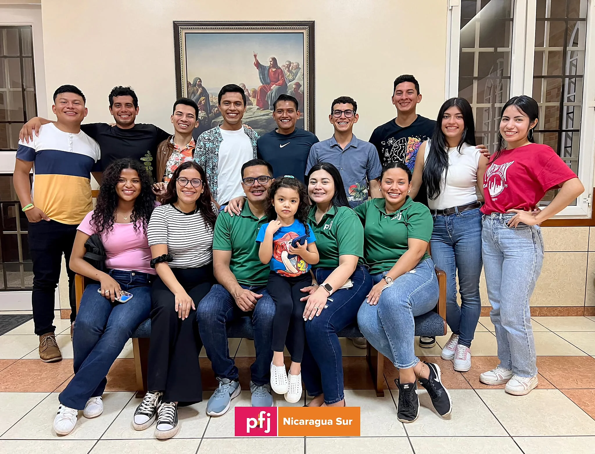

Staff 2024

Un equipo dedicado!
Nuestro dedicado equipo, desde el matrimonio director hasta nuestros hermanos de logística, se prepara todo un año con capacitaciones meticulosas. Su compromiso es asegurar que cada experiencia sea transformadora, acercándote más a Jesucristo y fortaleciendo tu fe. Esta labor es fundamental en el marco del PFJ SUD Nicaragua Sur, donde cada detalle está diseñado para enriquecer tu camino espiritual y personal.